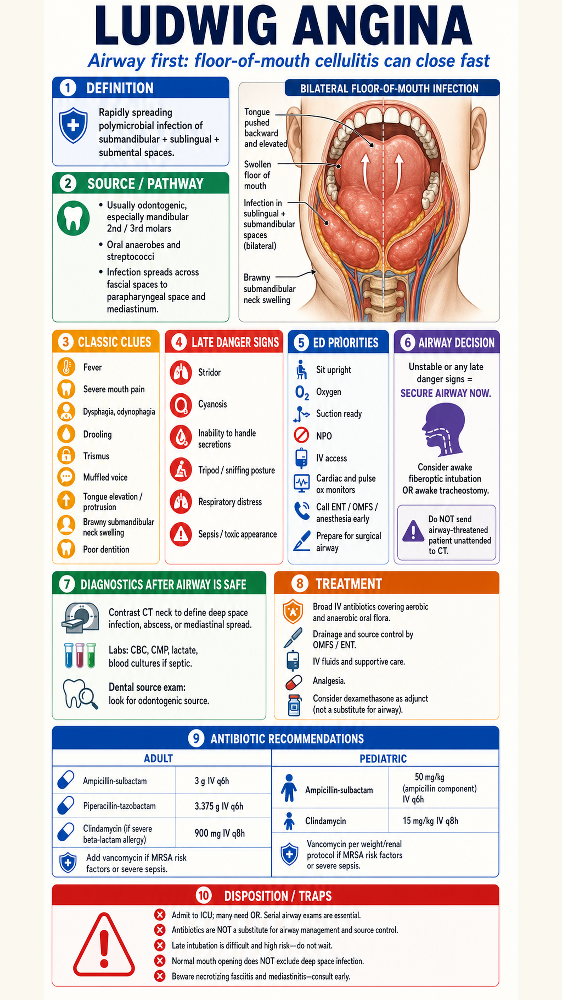

Core ED framing
Airway decisions come before imaging. A threatened airway should not leave the resuscitation area for CT without a secured plan and expert support.
Antibiotics
Cover oral aerobic and anaerobic flora early, then pursue drainage and dental source control. Add MRSA coverage when risk or severe sepsis is present.
Disposition
Admit to ICU/OR-capable setting with serial airway exams, ENT/OMFS involvement, and low threshold for operative drainage.